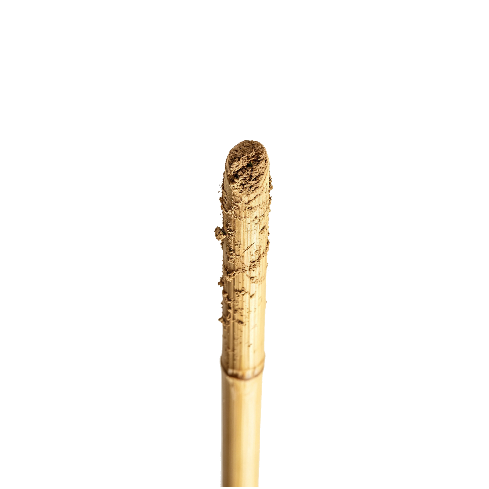

赵奶奶 · 探访一 · 枯萎的花
🍂

📦标本盒
📒野外记录本
🪪工作证
✉️未寄出的信
📦 标本盒 · 十二片干枯的勿忘我
野外记录本 · 赵秀兰
1984.7.12 云南·高黎贡山
气温24℃ 晴 花色：紫红
土壤：腐殖土 pH6.5
气温24℃ 晴 花色：紫红
土壤：腐殖土 pH6.5
1985.5.3 四川·峨眉山
气温19℃ 阴 花色：深紫
气温19℃ 阴 花色：深紫
1986.8.17 西藏·林芝
气温16℃ 花色：粉白
气温16℃ 花色：粉白
————
张家铭要办画展。我休了半年假。
老周接手了云南的项目。他说我安心照顾家里。
我没有说好。但我也没有说不好。
———— 此后空白 ————
🧑🔬
👵
赵秀兰
助理研究员
植物研究所 · 第三研究室
也做过一些事。
家铭：
我拿到昆明那个会议的通知了。要去两周。如果你画展的时间能往后推一下——算了，你忙你的。我再想想办法。
我拿到昆明那个会议的通知了。要去两周。如果你画展的时间能往后推一下——算了，你忙你的。我再想想办法。
（未署名 · 未写完）
点击继续 ▾